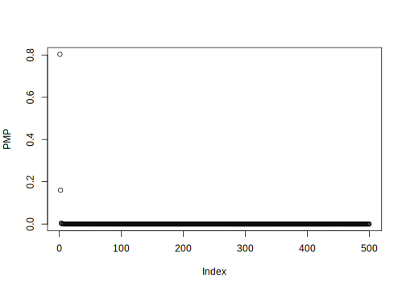
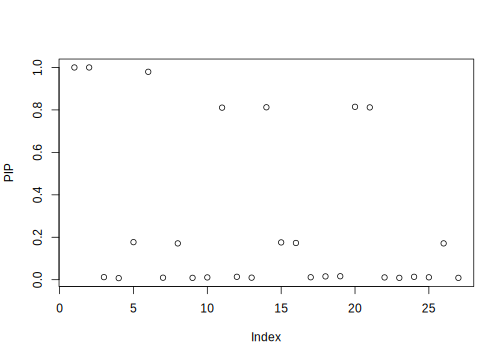
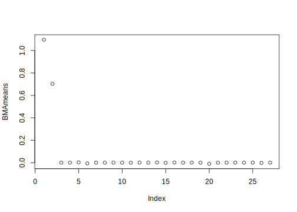
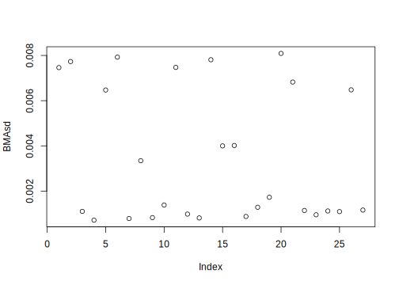
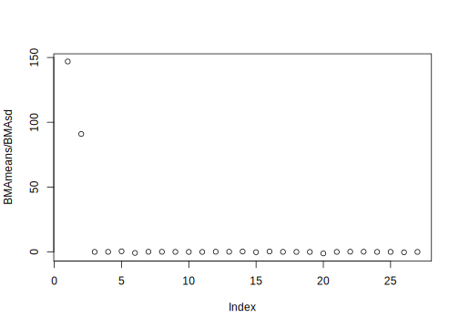

10.3 Generalized linear models
Generalized linear models (GLMs) were introduced by Nelder and Wedderburn (1972), extending the concept of linear regression to a more general setting. These models are characterized by: i) a dependent variable \(y_i\) whose probability distribution function belongs to the exponential family (see Section 3.1, ii) a linear predictor \(\eta = \boldsymbol{x}^{\top}\boldsymbol{\beta}\), and iii) a link function such that \(\mathbb{E}[y|\boldsymbol{x}] = g^{-1}(\boldsymbol{x}^{\top}\boldsymbol{\beta})\), which implies that \(g(\mathbb{E}[y|\boldsymbol{x}]) = \boldsymbol{x}^{\top}\boldsymbol{\beta}\). GLMs can be extended to the overdispersed exponential family (McCullagh and Nelder 1989).
As we know from Section 3.1, the Poisson distribution belongs to the exponential family, such that \(p(y|\lambda) = \frac{\exp(-\lambda)\exp(y\log(\lambda))}{y!}\), or in the canonical form \(p(y|\eta) = \frac{\exp(\eta y - \exp(\eta))}{y!}\), where \(\eta = \log(\lambda)\), which means that \(\boldsymbol{x}^{\top}\boldsymbol{\beta} = \log(\lambda)\). Consequently, \(\mathbb{E}[y|\boldsymbol{x}] = \nabla(\exp(\eta)) = \exp(\eta) = \lambda = \exp(\boldsymbol{x}^{\top}\boldsymbol{\beta})\). Therefore, the link function in the Poisson case is the log function. In Exercise 6, we ask you to show that the link function in the Bernoulli case is the logit function. Other examples include the identity function in the case of the Gaussian distribution and the negative inverse in the case of the gamma distribution.
We can use the GLM framework to perform Bayesian model averaging (BMA) using the BIC approximation, following A. Raftery (1995). Specifically, the BIC is given by \(BIC = k_m \log(N) - 2 \log(p(\hat{\boldsymbol{\theta}}_m | \boldsymbol{y}))\), where \(\hat{\boldsymbol{\theta}}_m\) is the maximum likelihood estimator. Thus, we simply need to calculate the likelihood function at the maximum likelihood estimator.
Example: Simulation exercises
Let’s perform some simulation exercises to assess the performance of the BIC approximation using the Occam’s window in GLMs. There are 27 regressors, where \(x_{i1}\) and \(x_{i2}\) are just the relevant regressors in all exercises, \(i=1,2,\dots,1000\).
Logit: \(x_k\sim N(0, 1)\), \(k =1,\dots,27\), and \(p(y_i=1|\boldsymbol{x}_i)=\exp(0.5+0.8x_{i1}-1.2x_{i2})/(1+\exp(0.5+0.8x_{i1}-1.2x_{i2}))\).
Gamma: \(x_k\sim N(0, 0.5^2)\), \(k =1,\dots,27\), and \(y_i\sim G(\alpha,\delta)\) where \(\alpha=-(0.5+0.2x_{i1}0.1x_{i2})^{-1}\) and \(\delta=1\).
Poisson: \(x_k\sim N(0, 1)\), \(k =1,\dots,27\), and \(\mathbb{E}[y_i|\boldsymbol{x}_i]=\lambda_i=\exp(0.5+1.1x_{i1}+0.7x_{i2})\).
Our GUI uses the command bic.glm from the BMA package to perform BMA using the BIC approximation with the Occam’s window in GLMs. The next Algorithm shows how to do this in our GUI, and the following code shows how to perform BMA in logit models using the simulation setting.
Algorithm: Bayesian Model Averaging in Generalized Linear Models using BIC
Select Bayesian Model Averaging on the top panel
Select the Generalized Linear Model using the left radio button. Options:
- Binomial data (Logit)
- Real positive data (Gamma)
- Count data (Poisson)
- Binomial data (Logit)
Upload the dataset, selecting first whether there is a header in the file and the type of separator in the csv file (comma, semicolon, or tab). Then, use the Browse button under the Choose File legend
Type the OR number of Occam’s window in the box under OR: Number between 5 and 50. This is not necessary, as the default value is 50
Type the OL number of Occam’s window in the box under OL: Number between 0.0001 and 1. This is not necessary, as the default value is 0.0025
Click the Go! button
Analyze results: After a few seconds or minutes, a table appears showing, for each regressor in the dataset:
- The posterior inclusion probability (p!=0)
- The BMA posterior mean (EV)
- The BMA standard deviation (SD)
- The PMP for the most relevant models (highest PMPs)
- The posterior inclusion probability (p!=0)
Download posterior results using the Download results using BIC button. Two files are provided:
- The first file contains the best models by row according to the PMP (last column), indicating variable inclusion with 1 (0 indicates no inclusion)
- The second file contains the PIP, the BMA expected value, and the standard deviation for each variable in the dataset
- The first file contains the best models by row according to the PMP (last column), indicating variable inclusion with 1 (0 indicates no inclusion)
The results show that the PIPs of \(x_{i1}\) and \(x_{i2}\) are equal 1 in all three settings, the data generating process gets the highest PMP, and the BMA posterior means are close to the population values in each simulation setting. The other variables get PIPs close to 0, except a few exceptions, and the BMA posterior means are also close to 0. This suggests that the BIC approximation does a good job finding the data generating process in generalized linear models.
We can take advantage of the glm function in R to perform BMA by programming an MC3 algorithm. The following code illustrates how to do this in the Poisson simulation. First, we simulate the data; second, we define a function to compute the log marginal likelihood approximation using the results from the glm function. Then, we initialize the models to begin the MC3 algorithm. After that, we implement the MC3 algorithm, which involves small modifications of the code used for MC3 in Gaussian linear models. We can calculate the posterior model probabilities (PMPs), posterior inclusion probabilities (PIPs), BMA means, and standard deviations as we did previously.
The simulation setting involves \(2^{27}\) models, which corresponds to approximately 135 million models in the model space. We run our MC3 algorithm using the BIC approximation with 50,000 iterations. This takes considerably more time than the BIC approximation from the BMA package, but it seems to perform well in identifying the data-generating process, as the PMP of this model equals 1. The posterior inclusion probabilities (PIPs) for \(x_{i1}\) and \(x_{i2}\) are also 1, and the posterior means are 1.1 and 0.7, respectively, which are equal to the population values. The t-ratios are far greater than 2. However, running 50,000 iterations results in mass concentration in one model, in this case, the data-generating process. If we run 25,000 MC3 iterations, the highest PMP is 0.8, but it is not associated with the data-generating process. Nonetheless, the PIP is equal to 1 for \(x_{i1}\) and \(x_{i2}\), and other regressors also have high PIPs. The BMA means for \(x_{i1}\) and \(x_{i2}\) are equal to the population values, and the BMA means for the other regressors are equal to 0. The t-ratios of the regressors in the population statistical model are much greater than 2, whereas the t-ratios of the other regressors are equal to 0. This exercise demonstrates that 25,000 iterations were not sufficient to uncover the data-generating process. However, it also emphasizes an important point: we need to analyze all the relevant results from the BMA analysis, not just the PMPs and/or PIPs.
In Exercise 10, we ask you to use this approach to perform a BMA algorithm in the logit regression, using the simulation setting for logit models from this section.
### Logit ###
rm(list = ls()); set.seed(010101)
n<-1000; B<-c(0.5,0.8,-1.2)
X<-matrix(cbind(rep(1,n),rnorm(n,0,1),rnorm(n,0,1)),n,length(B))
p <- exp(X%*%B)/(1+exp(X%*%B)); y <- rbinom(n, 1, p)
nXgar<-25; Xgar<-matrix(rnorm(nXgar*n),n,nXgar)
df<-as.data.frame(cbind(y,X[,-1],Xgar))
colnames(df) <- c("y", "x1", "x2", "x3", "x4", "x5", "x6", "x7", "x8", "x9", "x10", "x11", "x12", "x13", "x14", "x15", "x16", "x17", "x18", "x19", "x20", "x21", "x22", "x23", "x24", "x25", "x26", "x27")
BMAglmLogit <- BMA::bic.glm(y ~ x1+x2+x3+x4+x5+x6+x7+x8+x9+x10+x11+x12+x13+x14+x15+x16+x17+x18+x19+x20+x21+x22+x23+x24+x25+x26+x27, data = df, glm.family = binomial(link="logit"), strict = FALSE, OR = 50)
summary(BMAglmLogit)##
## Call:
## bic.glm.formula(f = y ~ x1 + x2 + x3 + x4 + x5 + x6 + x7 + x8 + x9 + x10 + x11 + x12 + x13 + x14 + x15 + x16 + x17 + x18 + x19 + x20 + x21 + x22 + x23 + x24 + x25 + x26 + x27, data = df, glm.family = binomial(link = "logit"), strict = FALSE, OR = 50)
##
##
## 40 models were selected
## Best 5 models (cumulative posterior probability = 0.6196 ):
##
## p!=0 EV SD model 1 model 2 model 3
## Intercept 100 4.231e-01 0.076191 0.4212 0.4182 0.4296
## x1.x 100.0 8.512e-01 0.084649 0.8467 0.8541 0.8549
## x2.x 100.0 -1.105e+00 0.089964 -1.1029 -1.1079 -1.1023
## x3.x 2.9 2.382e-03 0.018557 . . .
## x4.x 24.5 -4.203e-02 0.082651 . . -0.1699
## x5.x 0.8 1.304e-04 0.006885 . . .
## x6.x 1.8 1.240e-03 0.013934 . . .
## x7.x 14.8 2.273e-02 0.061659 . . .
## x8.x 0.8 -6.231e-05 0.006677 . . .
## x9.x 0.9 -2.308e-04 0.007548 . . .
## x10.x 0.9 -3.683e-04 0.008215 . . .
## x11.x 1.1 -6.107e-04 0.009791 . . .
## x12.x 0.8 -1.680e-05 0.006267 . . .
## x13.x 1.1 -6.397e-04 0.009839 . . .
## x14.x 0.8 1.517e-04 0.007144 . . .
## x15.x 0.9 -1.923e-04 0.007157 . . .
## x16.x 1.0 4.411e-04 0.008425 . . .
## x17.x 1.8 1.298e-03 0.013796 . . .
## x18.x 0.8 4.661e-05 0.006742 . . .
## x19.x 1.0 4.311e-04 0.008746 . . .
## x20.x 0.8 -1.571e-04 0.007049 . . .
## x21.x 7.5 8.922e-03 0.037260 . . .
## x22.x 0.8 4.378e-05 0.006687 . . .
## x23.x 24.3 -4.202e-02 0.083002 . -0.1718 .
## x24.x 0.8 -1.384e-04 0.007200 . . .
## x25.x 0.8 -1.363e-05 0.006489 . . .
## x26.x 1.8 1.336e-03 0.014274 . . .
## x27.x 1.9 1.354e-03 0.014298 . . .
##
## nVar 2 3 3
## BIC -5812.0652 -5810.3862 -5810.3482
## post prob 0.260 0.112 0.110
## model 4 model 5
## Intercept 0.4221 0.4271
## x1.x 0.8481 0.8627
## x2.x -1.1016 -1.1087
## x3.x . .
## x4.x . -0.1784
## x5.x . .
## x6.x . .
## x7.x 0.1575 .
## x8.x . .
## x9.x . .
## x10.x . .
## x11.x . .
## x12.x . .
## x13.x . .
## x14.x . .
## x15.x . .
## x16.x . .
## x17.x . .
## x18.x . .
## x19.x . .
## x20.x . .
## x21.x . .
## x22.x . .
## x23.x . -0.1801
## x24.x . .
## x25.x . .
## x26.x . .
## x27.x . .
##
## nVar 3 4
## BIC -5809.6482 -5809.1451
## post prob 0.078 0.060
##
## 1 observations deleted due to missingness.### Gamma ###
rm(list = ls()); set.seed(010101)
n<-1000; B<- c(0.5, 0.2, 0.1)
X<-matrix(cbind(rep(1,n),rnorm(n,0,0.5),rnorm(n,0,0.5)),n,length(B))
y1 <- (X%*%B)^(-1)
y <- rgamma(n,y1,scale=1)
nXgar<-25; Xgar<-matrix(rnorm(nXgar*n),n,nXgar)
df<-as.data.frame(cbind(y,X[,-1],Xgar))
colnames(df) <- c("y", "x1", "x2", "x3", "x4", "x5", "x6", "x7", "x8", "x9", "x10", "x11", "x12", "x13", "x14", "x15", "x16", "x17", "x18", "x19", "x20", "x21", "x22", "x23", "x24", "x25", "x26", "x27")
BMAglmGamma <- BMA::bic.glm(y ~ x1+x2+x3+x4+x5+x6+x7+x8+x9+x10+x11+x12+x13+x14+x15+x16+x17+x18+x19+x20+x21+x22+x23+x24+x25+x26+x27, data = df, glm.family = Gamma(link="inverse"), strict = FALSE, OR = 50)
summary(BMAglmGamma)##
## Call:
## bic.glm.formula(f = y ~ x1 + x2 + x3 + x4 + x5 + x6 + x7 + x8 + x9 + x10 + x11 + x12 + x13 + x14 + x15 + x16 + x17 + x18 + x19 + x20 + x21 + x22 + x23 + x24 + x25 + x26 + x27, data = df, glm.family = Gamma(link = "inverse"), strict = FALSE, OR = 50)
##
##
## 36 models were selected
## Best 5 models (cumulative posterior probability = 0.6264 ):
##
## p!=0 EV SD model 1 model 2 model 3
## Intercept 100 4.890e-01 0.0117343 4.885e-01 4.895e-01 4.902e-01
## x1.x 100.0 2.026e-01 0.0187327 2.021e-01 2.033e-01 2.042e-01
## x2.x 99.2 7.552e-02 0.0210472 7.577e-02 7.595e-02 7.820e-02
## x3.x 1.1 3.661e-05 0.0011044 . . .
## x4.x 1.2 7.240e-05 0.0012692 . . .
## x5.x 1.0 1.013e-06 0.0010648 . . .
## x6.x 1.0 -7.413e-06 0.0009672 . . .
## x7.x 2.1 1.787e-04 0.0019443 . . .
## x8.x 2.7 3.187e-04 0.0025652 . . .
## x9.x 2.8 3.287e-04 0.0026193 . . .
## x10.x 2.5 -2.618e-04 0.0023160 . . .
## x11.x 2.2 -1.909e-04 0.0018748 . . .
## x12.x 1.3 -1.021e-04 0.0014787 . . .
## x13.x 1.1 5.812e-05 0.0012447 . . .
## x14.x 1.2 -8.201e-05 0.0013340 . . .
## x15.x 1.1 5.983e-05 0.0012278 . . .
## x16.x 1.0 4.335e-06 0.0010045 . . .
## x17.x 1.0 1.127e-05 0.0010351 . . .
## x18.x 1.0 1.195e-05 0.0010612 . . .
## x19.x 1.2 -8.152e-05 0.0013225 . . .
## x20.x 25.2 5.858e-03 0.0112689 . 2.329e-02 .
## x21.x 11.5 -2.200e-03 0.0069431 . . -1.938e-02
## x22.x 1.1 -3.714e-05 0.0011170 . . .
## x23.x 10.4 1.998e-03 0.0067118 . . .
## x24.x 1.0 8.960e-06 0.0009762 . . .
## x25.x 1.5 1.462e-04 0.0017640 . . .
## x26.x 2.1 -1.856e-04 0.0019576 . . .
## x27.x 1.0 5.144e-06 0.0010106 . . .
##
## nVar 2 3 3
## BIC -5.849e+03 -5.848e+03 -5.846e+03
## post prob 0.316 0.149 0.072
## model 4 model 5
## Intercept 4.893e-01 4.903e-01
## x1.x 2.019e-01 2.027e-01
## x2.x 7.641e-02 7.639e-02
## x3.x . .
## x4.x . .
## x5.x . .
## x6.x . .
## x7.x . .
## x8.x . .
## x9.x . .
## x10.x . .
## x11.x . .
## x12.x . .
## x13.x . .
## x14.x . .
## x15.x . .
## x16.x . .
## x17.x . .
## x18.x . .
## x19.x . .
## x20.x . 2.364e-02
## x21.x . .
## x22.x . .
## x23.x 1.914e-02 1.948e-02
## x24.x . .
## x25.x . .
## x26.x . .
## x27.x . .
##
## nVar 3 4
## BIC -5.846e+03 -5.845e+03
## post prob 0.060 0.030
##
## 1 observations deleted due to missingness.### Poisson ###
rm(list = ls()); set.seed(010101)
n<-1000; B<-c(2,1.1,0.7)
X<-matrix(cbind(rep(1,n),rnorm(n,0,1),rnorm(n,0,1)),n,length(B))
y1<-exp(X%*%B); y<-rpois(n,y1)
nXgar<-25; Xgar<-matrix(rnorm(nXgar*n),n,nXgar)
df<-as.data.frame(cbind(y,X[,-1],Xgar))
colnames(df) <- c("y", "x1", "x2", "x3", "x4", "x5", "x6", "x7", "x8", "x9", "x10", "x11", "x12", "x13", "x14", "x15", "x16", "x17", "x18", "x19", "x20", "x21", "x22", "x23", "x24", "x25", "x26", "x27")
BMAglmPoisson <- BMA::bic.glm(y ~ x1+x2+x3+x4+x5+x6+x7+x8+x9+x10+x11+x12+x13+x14+x15+x16+x17+x18+x19+x20+x21+x22+x23+x24+x25+x26+x27, data = df, glm.family = poisson(link="log"), strict = FALSE, OR = 50)
summary(BMAglmPoisson)##
## Call:
## bic.glm.formula(f = y ~ x1 + x2 + x3 + x4 + x5 + x6 + x7 + x8 + x9 + x10 + x11 + x12 + x13 + x14 + x15 + x16 + x17 + x18 + x19 + x20 + x21 + x22 + x23 + x24 + x25 + x26 + x27, data = df, glm.family = poisson(link = "log"), strict = FALSE, OR = 50)
##
##
## 26 models were selected
## Best 5 models (cumulative posterior probability = 0.6228 ):
##
## p!=0 EV SD model 1 model 2 model 3
## Intercept 100 2.004e+00 0.0120917 2.004e+00 2.002e+00 2.003e+00
## x1.x 100.0 1.093e+00 0.0071406 1.093e+00 1.096e+00 1.095e+00
## x2.x 100.0 7.020e-01 0.0076175 7.020e-01 7.023e-01 7.011e-01
## x3.x 1.9 -1.202e-04 0.0013752 . . .
## x4.x 1.4 -2.783e-05 0.0009363 . . .
## x5.x 5.8 7.628e-04 0.0036096 . . 1.326e-02
## x6.x 1.9 -1.311e-04 0.0014441 . . .
## x7.x 1.5 5.797e-05 0.0010305 . . .
## x8.x 1.4 -2.484e-05 0.0009678 . . .
## x9.x 1.6 -7.084e-05 0.0011074 . . .
## x10.x 3.7 -4.232e-04 0.0026514 . . .
## x11.x 1.4 -3.190e-05 0.0010090 . . .
## x12.x 1.5 4.617e-05 0.0009407 . . .
## x13.x 1.4 2.822e-05 0.0009560 . . .
## x14.x 1.4 2.029e-05 0.0010251 . . .
## x15.x 2.1 -1.445e-04 0.0014510 . . .
## x16.x 1.6 7.135e-05 0.0011593 . . .
## x17.x 1.5 -5.180e-05 0.0010208 . . .
## x18.x 1.6 -8.503e-05 0.0012462 . . .
## x19.x 3.2 -3.442e-04 0.0023704 . . .
## x20.x 5.8 -7.149e-04 0.0033497 . -1.223e-02 .
## x21.x 1.4 -2.393e-05 0.0009079 . . .
## x22.x 2.1 1.578e-04 0.0015657 . . .
## x23.x 1.7 9.252e-05 0.0012586 . . .
## x24.x 1.5 -4.766e-05 0.0010436 . . .
## x25.x 2.1 -1.453e-04 0.0014830 . . .
## x26.x 3.4 -3.780e-04 0.0025203 . . .
## x27.x 4.1 -4.169e-04 0.0024626 . . .
##
## nVar 2 3 3
## BIC -5.798e+03 -5.794e+03 -5.794e+03
## post prob 0.429 0.058 0.058
## model 4 model 5
## Intercept 2.004e+00 2.004e+00
## x1.x 1.094e+00 1.093e+00
## x2.x 7.024e-01 7.024e-01
## x3.x . .
## x4.x . .
## x5.x . .
## x6.x . .
## x7.x . .
## x8.x . .
## x9.x . .
## x10.x . -1.139e-02
## x11.x . .
## x12.x . .
## x13.x . .
## x14.x . .
## x15.x . .
## x16.x . .
## x17.x . .
## x18.x . .
## x19.x . .
## x20.x . .
## x21.x . .
## x22.x . .
## x23.x . .
## x24.x . .
## x25.x . .
## x26.x . .
## x27.x -1.027e-02 .
##
## nVar 3 3
## BIC -5.793e+03 -5.793e+03
## post prob 0.041 0.037
##
## 1 observations deleted due to missingness.########################################
rm(list = ls()); set.seed(010101)
n<-1000; B<-c(2,1.1,0.7)
X<-matrix(cbind(rep(1,n),rnorm(n,0,1),rnorm(n,0,1)),n,length(B))
y1<-exp(X%*%B); y<-rpois(n,y1)
nXgar<-25; Xgar<-matrix(rnorm(nXgar*n),n,nXgar)
df<-as.data.frame(cbind(y,X[,-1],Xgar))
colnames(df) <- c("y", "x1", "x2", "x3", "x4", "x5", "x6", "x7", "x8", "x9", "x10", "x11", "x12", "x13", "x14", "x15", "x16", "x17", "x18", "x19", "x20", "x21", "x22", "x23", "x24", "x25", "x26", "x27")
Xnew <- apply(df[,-1], 2, scale)
BICfunt <- function(Model){
indr <- Model == 1; kr <- sum(indr)
if(kr > 0){
Xr <- as.matrix(Xnew[ , indr])
model <- glm(y ~ Xr, family = poisson(link = "log"))
model_bic <- BIC(model)
mllMod <- -model_bic/2
}else{
model <- glm(y ~ 1, family = poisson(link = "log"))
model_bic <- BIC(model); mllMod <- -model_bic/2
}
return(mllMod)
}
M <- 500; K <- dim(df)[2] - 1
Models <- matrix(rbinom(K*M, 1, p = 0.5), ncol = K, nrow = M)
mllnew <- sapply(1:M, function(s){BICfunt(matrix(Models[s,], 1, K))})
oind <- order(mllnew, decreasing = TRUE)
mllnew <- mllnew[oind]; Models <- Models[oind, ]
# Hyperparameters MC3
iter <- 25000
pb <- winProgressBar(title = "progress bar", min = 0, max = iter, width = 300)
s <- 1
while(s <= iter){
ActModel <- Models[M,]
idK <- which(ActModel == 1)
Kact <- length(idK)
if(Kact < K & Kact > 1){
CardMol <- K
opt <- sample(1:3, 1)
if(opt == 1){ # Same
CandModel <- ActModel
}else{
if(opt == 2){ # Add
All <- 1:K
NewX <- sample(All[-idK], 1)
CandModel <- ActModel
CandModel[NewX] <- 1
}else{ # Subtract
LessX <- sample(idK, 1)
CandModel <- ActModel
CandModel[LessX] <- 0
}
}
}else{
CardMol <- K + 1
if(Kact == K){
opt <- sample(1:2, 1)
if(opt == 1){ # Same
CandModel <- ActModel
}else{ # Subtract
LessX <- sample(1:K, 1)
CandModel <- ActModel
CandModel[LessX] <- 0
}
}else{
if(K == 1){
opt <- sample(1:3, 1)
if(opt == 1){ # Same
CandModel <- ActModel
}else{
if(opt == 2){ # Add
All <- 1:K
NewX <- sample(All[-idK], 1)
CandModel <- ActModel
CandModel[NewX] <- 1
}else{ # Subtract
LessX <- sample(idK, 1)
CandModel <- ActModel
CandModel[LessX] <- 0
}
}
}else{ # Add
NewX <- sample(1:K, 1)
CandModel <- ActModel
CandModel[NewX] <- 1
}
}
}
LogMLact <- BICfunt(matrix(ActModel, 1, K))
LogMLcand <- BICfunt(matrix(CandModel, 1, K))
alpha <- min(1, exp(LogMLcand-LogMLact))
u <- runif(1)
if(u <= alpha){
mllnew[M] <- LogMLcand
Models[M, ] <- CandModel
oind <- order(mllnew, decreasing = TRUE)
mllnew <- mllnew[oind]
Models <- Models[oind, ]
}else{
mllnew <- mllnew
Models <- Models
}
s <- s + 1
setWinProgressBar(pb, s, title=paste( round(s/iter*100, 0),"% done"))
}
close(pb)## NULLModelsUni <- unique(Models)
mllnewUni <- sapply(1:dim(ModelsUni)[1], function(s){BICfunt(matrix(ModelsUni[s,], 1, K))})
StMarLik <- exp(mllnewUni-mllnewUni[1])
PMP <- StMarLik/sum(StMarLik) # PMP based on unique selected models
plot(PMP)
## [1] 1 1 0 0 0 1 0 0 0 0 1 0 0 1 0 0 0 0 0 1 1 0 0 0 0 0 0PIP <- NULL
for(k in 1:K){
PIPk <- sum(PMP[which(ModelsUni[,k] == 1)])
PIP <- c(PIP, PIPk)
}
plot(PIP)
Xnew <- df[,-1]
nModels <- dim(ModelsUni)[1]
Means <- matrix(0, nModels, K)
Vars <- matrix(0, nModels, K)
for(m in 1:nModels){
idXs <- which(ModelsUni[m,] == 1)
if(length(idXs) == 0){
Regm <- glm(y ~ 1, family = poisson(link = "log"))
}else{
Xm <- as.matrix(Xnew[, idXs])
Regm <- glm(y ~ Xm, family = poisson(link = "log"))
SumRegm <- summary(Regm)
Means[m, idXs] <- SumRegm[["coefficients"]][-1,1]
Vars[m, idXs] <- SumRegm[["coefficients"]][-1,2]^2
}
}
BMAmeans <- colSums(Means*PMP)
BMAsd <- (colSums(PMP*Vars) + colSums(PMP*(Means-matrix(rep(BMAmeans, each = nModels), nModels, K))^2))^0.5
plot(BMAmeans)

